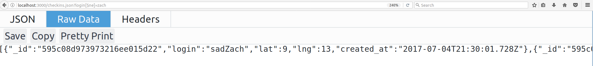

I have been hired as a security consultant to find, document, and resolve the security and privacy issues in the "server-vuln.js" and "package.json" working Node.js + Express + MongoDB web application provided to me.
When testing the application, I first used "black box" testing. I ran the code locally using the code supplied on the assignment page, and then proceeded to use the 'curl' tool to conduct attacks. I decided to use curl primarily, rather than other tools like Burp Suite. Using various curl commands, I was able to change and manipulate the site through attacks.
Overall, there were a few main vulnerabilities that I found with the website and code. First of all, there were vulnerabilities in which potential attackers can input code to access important data from the website, and vulnerabilities that allow people to damage the website and change it, adding in annoying messages or content. Errors like these can make the site much harder to navigate, and can be dangerous to people trying to access the website. The website can be crashed, and its appearance can be dramatically changed. Therefore, it is important to catch issues like these and resolve them before too much damage can be done.
There are multiple instances of vulnerabilities via cross site scripting in this code. (XSS)
This affects the app.post route /sendLocation.
This issue is quite severe, as attackers can dramatically change the appearance of the site, make it much harder to navigate, and even crash the website by running malicious scripts.
Due to vulnerabilities in the code and no verification or sanitizing of the potential user input, the code can be attacked and potentially malicious scripts can be run on the browser, impacting the users. The content of the website is free to be manipulated, and unwanted disruptions such as pop-up boxes may also be inserted. I found this issue using curl and running my own script on the website, as shown in this screenshot. In this case, "login", "lat", and "lng" are areas that are requested, meaning that there are three unique instances of XSS vulnerabilities that can be attacked. Malicious script can be run in all of these instances.
In this screenshot I show the potential dangers resulting from this vulnerability. In this case, I added my own content to the site and ran a script to create a pop-up box. Much more malicious code could be run to distort the site or make it much more annoying for the user.
In order to address this issue, untrusted data should properly be escaped, and user input and data should be verified and checked before it may unintentionally run potentially dangerous scripts.
There is a clear instance of a vulnerability to injection in this code
This issue affects the app.get /checkins.json route
I consider this issue quite severe, as it allows for access to sensitive data such as information about all of the viewers of the site.
This vulnerability indicates that by a potential hacker mangling and adjusting a query, they may be able to gain access to sensitive information about all of the people who have viewed the website. By adjusting the query and getting access to the data, this data could be taken from the website with malicious intent and could be used wrongfully without the permission of those who the data came from. I was able to find this vulnerability by adjusting the query for myself until I found the method to get access to all of the data.
In this screenshot, I show both the query that allows for access to the data and the resulting data that is displayed on the website as a result of my query. In this case there were only two entries for checkins, yet with more and more entries being provided by users, there is more sensitive data that can be taken.
Similar to the last issue, a big potential resolution to this issue of injection would be to verify and check more closely the input of the user. By checking the input of the user such as the query, injection like this can be avoided, and access to the data can be restricted more seriously.
This affects the app.post route /sendLocation.
This issue is quite severe, as attackers can bring down the entire site and change its appearance and functionality drastically.
Due to vulnerabilities in the code and no verification or sanitizing of the potential user input, the code can be attacked and potentially malicious scripts can be run on the browser, impacting the users. The content of the website is free to be manipulated and upon entering in an infinite loop the site could eventually be broken. I found this issue using curl and running my own script on the website, as shown in this screenshot. In this case, "login", "lat", and "lng" are areas that are requested, meaning that there are three unique instances of XSS vulnerabilities that can be attacked. Using curl allows for an infinite loop to be run, for infinite checkins and manipulations of this website until it is broken. .
In this screenshot I show the potential dangers resulting from this vulnerability. In this case, I added my own content to the site in an infinite loop, and took a screenshot after interrupting it. From this screenshot you can observe that if the command continued, the site could be broken from the infinite loop.
In order to address this issue, untrusted data should properly be escaped, and user input and data should be verified and checked before it may unintentionally run potentially dangerous scripts. This input should be checked so that no harmful codes capable of breaking down the website could possibly run.
From this security briefing, I have brought up a few possible vulnerabilities in this site. Among them are issues like Cross Site Scripting (XSS) and injections. Many of these issues are a problem because of potential user input in this code, and the lack of an ability to validate and check it for malicious content. I would recommend pursuing ways to verify the user input and sanitize it so that malicious scripts are not capable of being enacted, and so that users can not get access to all of the checkins and data stored on the website. Changes like this are not too difficult to make, but can make a large difference in the safety of your site. I would offer the solutions to these problems for approximately $130, at a negotiable price. The safety of your site is worth at least this much, is it not?